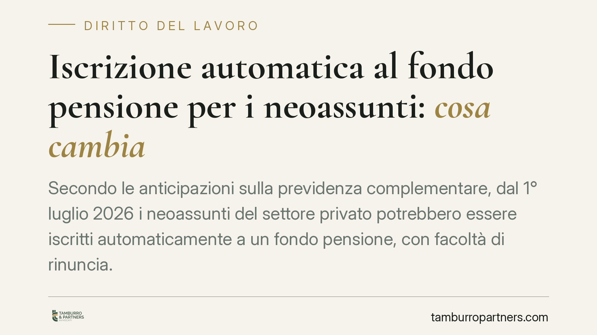

Iscrizione automatica al fondo pensione per i neoassunti: cosa cambia
Secondo le anticipazioni sulla previdenza complementare, dal 1° luglio 2026 i neoassunti del settore privato potrebbero essere iscritti automaticamente a un fondo pensione, con facoltà di rinuncia. L'assetto definitivo dipende dal testo in Gazzetta Ufficiale e dalle direttive COVIP. È opportuno distinguere questo meccanismo da quello, già vigente, del conferimento tacito del TFR.

Il quadro in evoluzione
Si parla di un meccanismo di adesione automatica alla previdenza complementare per i lavoratori dipendenti del settore privato neoassunti a partire dal 1° luglio 2026. Lo schema prevederebbe l'iscrizione d'ufficio a un fondo pensione, con possibilità per il lavoratore di rinunciare entro un termine da definire.
Si tratta, allo stato, di un impianto in discussione. La disciplina operativa e la sua effettiva entrata in vigore dipendono dal testo pubblicato in Gazzetta Ufficiale e dalle direttive attuative della COVIP (Commissione di vigilanza sui fondi pensione). Finché questi atti non sono consolidati, ogni indicazione va trattata come provvisoria e da verificare.
Due meccanismi da non confondere
È essenziale distinguere due istituti differenti.
Il conferimento tacito del TFR è già previsto dall'art. 8, comma 7, del D.Lgs. 252/2005. In base a questa norma, se il lavoratore non esprime alcuna scelta entro sei mesi dalla data di assunzione, il TFR maturando confluisce automaticamente nella forma pensionistica collettiva di riferimento prevista dagli accordi o contratti collettivi applicabili. Questo riguarda la destinazione del flusso di TFR, non l'adesione del lavoratore in quanto tale.
L'adesione automatica al fondo di cui si discute per il 2026 è cosa diversa: inciderebbe sull'iscrizione stessa del lavoratore alla previdenza complementare, con un distinto meccanismo di rinuncia. A oggi non esiste un termine di rinuncia all'adesione automatica codificato: eventuali durate che circolano (ad esempio un ipotetico termine di sessanta giorni, qui richiamato a titolo meramente esemplificativo) non vanno lette come dato normativo.
Quanto alla destinazione residuale del TFR tacito in assenza di una forma collettiva di riferimento, il tradizionale rinvio alla gestione istituita presso l'INPS (FONDINPS) richiede verifica: FONDINPS ha cessato la raccolta di nuove adesioni e le relative posizioni sono state oggetto di trasferimento. Il punto va aggiornato alla luce dell'evoluzione normativa e regolamentare.
Il ruolo dei fondi negoziali
La destinazione collettiva fa tipicamente capo ai fondi negoziali di categoria, istituiti dalla contrattazione collettiva per singoli comparti. L'individuazione del fondo applicabile dipende dal CCNL di riferimento e dall'assetto contrattuale vigente al momento dell'assunzione, da verificare caso per caso.
Implicazioni pratiche
Per i datori di lavoro il nodo principale è l'obbligo informativo. Un meccanismo di adesione automatica rende cruciale provare di aver reso al lavoratore un'informativa chiara, tempestiva e documentata sulle facoltà di scelta e di rinuncia.
L'onere della prova di aver correttamente informato grava sul datore. In un contenzioso, l'assenza di documentazione tracciabile espone a contestazioni sulla validità dell'iscrizione o sulla gestione dei contributi.
Sul piano delle conseguenze, il mancato o irregolare versamento dei contributi alla previdenza complementare segue il regime proprio dei contributi omessi o evasi, con i relativi oneri a carico del datore inadempiente; la COVIP esercita inoltre poteri di vigilanza sulle forme pensionistiche. La portata esatta degli eventuali profili sanzionatori connessi al nuovo meccanismo andrà letta alla luce del testo definitivo.
Per i lavoratori cambia la logica di default: il silenzio non equivale più a inerzia neutra, ma può produrre l'iscrizione. Chi non intende aderire dovrà attivarsi espressamente nei termini previsti.
Cosa fare in concreto
Per i datori di lavoro:
- Predisponete un modello di informativa scritta sulle facoltà di adesione, rinuncia e scelta del fondo, da consegnare al momento dell'assunzione.
- Conservate prova tracciabile della consegna (ricevuta firmata, PEC, piattaforma documentale).
- Verificate il fondo negoziale di riferimento previsto dal CCNL applicato.
- Aggiornate procedure payroll e onboarding non appena il testo sarà pubblicato in Gazzetta Ufficiale.
Per i lavoratori:
- Leggete l'informativa consegnata all'assunzione e annotate i termini per rinunciare o scegliere il fondo.
- Valutate con attenzione prima di rinunciare: la previdenza complementare incide sul trattamento futuro.
Monitorate la pubblicazione in Gazzetta Ufficiale e le direttive COVIP prima di assumere decisioni definitive.
Disclaimer
Contributo informativo a cura di Tamburro & Partners - Avv. Giuseppe Tamburro. Non costituisce parere legale.
Ogni storia di lavoro ha i suoi tempi.
Se gestisci HR e vuoi un confronto su contenzioso, ispezioni o licenziamenti, scrivi allo studio. Ti rispondiamo entro un giorno lavorativo.